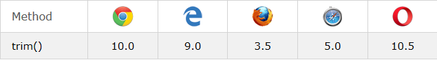

ECMA ECMAScript ECMA5 ECMA6 JavaScript JScript strict mode
Document Object Model(DOM) Browser Object Model(BOM) JSON arrows let const generators spread
rest promise hoisting yield for-of Iteration Iterable Iterator Symbol.iterator
prototype Template Literal String.raw Array-like
Table of Contents: |
1. ECMA
To top1961년 유럽에서 컴퓨터 시스템을 표준화하기 위해 설립.
정보와 통신 시스템을 위한 국제적이면서도 회원국 기반의 비영리 표준화 기구로 국제적 확장을 반영하여 1994년 ECMA에서 Ecma International로 변경되었다.
표준 목록
| 규격 (Standard) | 설명 (Description) |
|---|---|
ECMA-119 |
CD-ROM 볼륨, 파일 구조 (ISO 9660로 알려져 있음) |
ECMA-262 |
ECMAScript 언어 규격 |
ECMA-334 |
C# 언어 규격 |
ECMA-335 |
공통 언어 기반 (CLI) |
ECMA-341 |
전자 제품을 위한 환경 디자인 고려 |
ECMA-363 |
유니버설 3D 파일 포맷 |
ECMA-367 |
에펠: 분석, 설계, 프로그래밍 언어 |
ECMA-372 |
C++ / CLI 언어 규격 |
ECMA-378 |
HVD-ROM |
ECMA-388 |
Ecma 오피스 오픈 XML |
https://www.ecma-international.org/publications/standards/Standard.htm
2. *Script
To topJavaScript
넷스케이프(Netscape)에서 웹페이지에 동적인 요소를 구현하기 위해 1995년에 개발한 언어이다. 모질라(Mozilla) 재단의 AOL에 회사가 넘어가고 2007년 12월 제작이 중단되었다. 그후 Firefox에 흡수되었으며, 현재 1.8.5 버전까지 출시되었다.
JScript
IE(Internet Explorer)에서 사용하기 위하여 MS(MicroSoft)에서 개발한 언어이다. 1996년 8월에 출시된 IE 3.0부터 지원하였으며, IE 9에서는 9.0버전이 적용되었다.
.Net Framework에서 7.0, 7.1, 8.0, 10.0의 버전이 출시되었다.
ECMAScript
넷스케이프(Netscape)가 JavaScript 기술 규격을 표준화 하기 위해 ECMA International에 제출하여 ECMA-262 기술 규격으로 시작되었다.
ECMA-262 기술 규격이 표준화된 언어의 이름을 ECMAScript라고 한다.
JavaScript와 JScript 모두 ECMAScript와 호환을 목표로 하며, 각자 ECMA 규격에 포함되지 않은 독자적인 확장 기능을 제공한다.
(JScript: https://msdn.microsoft.com/en-us/library/894hfyb4(v=vs.100).aspx)
| 년도 (Year) | 이름 (Name) | 설명 (Description) |
|---|---|---|
| 1997 | ECMAScript 1 | First Edition. |
| 1998 | ECMAScript 2 | Editiorial changes only. |
| 1999 | ECMAScript 3 | Added Regular Expressions. Added try/catch. |
| ECMAScript 4 | Was never released. | |
| 2009 | ECMAScript 5 | Added "strict mode". Added JSON support |
| 2011 | ECMAScript 5.1 | Editorial changes. |
| 2015 | ECMAScript 6 | Added classes and modules. |
| 2016 | ECMAScript 7 | Added exponential operator (**). Added Array.prototype.includes. |
*Script 버전 비교
| 년도 (Year) | JavaScript | JScript | ECMA | Browser |
|---|---|---|---|---|
| 1996 | 1.0 | Netscape 2 | ||
| 1996 | 1.0 | Internet Explorer 3 | ||
| 1996 | 1.1 | Netscape 3 | ||
| 1997 | 1.2 | Netscape 4 | ||
| 1997 | 3.0 | 1 | Internet Explorer 4 | |
| 1998 | 1.3 | 1 | Netscape 4.06 | |
| 1999 | 5.0 | 2 | Internet Explorer 5 | |
| 1999 | 5.1 | 2 | Internet Explorer 5.1 | |
| 2000 | 5.5 | 3 | Internet Explorer 5.5 | |
| 2000 | 1.5 | 3 | Netscape 6 | |
| 2000 | 1.5 | 3 | Firefox 1 | |
| 2001 | 5.6 | 3 | Internet Explorer 6 | |
| 2005 | 1.6 | 3 | Firefox 1.5 | |
| 2006 | 5.7 | 3 | Internet Explorer 7 | |
| 2006 | 1.7 | 3 | Firefox 2 | |
| 2008 | 1.8 | 3 | Firefox 3 | |
| 2009 | 5.8 | 3 | Internet Explorer 8 | |
| 2009 | 1.8.1 | 5 | Firefox 3.5 (Partial Support) | |
| 2009 | 1.8.2 | 5 | Firefox 3.5 (Partial Support) | |
| 2011 | 1.8.5 | 5 | Firefox 4 | |
| 2011 | 9.0 | 5 | Internet Explorer 9 (Partial Support) |
흔히 말하는 JavaScript
Core(ECMAScript) + Document Object Model(DOM) + Browser Object Model(BOM)
Core
명세에서 설명하는 부분(문법, 타입, 선언문, 키워드, 예약어, 연산자, 객체)을 구현한 언어를 뜻하며 JavaScript는 ECMAScript를 구현한 것이다.
Document Object Model(DOM)
HTML, XML 문서를 처리하는 API.
window 객체의 document 프로퍼티를 통해서 사용할 수 있는 객체 모델를 의미한다.
웹 문서의 내용, 구조, 스타일에 관한 정보에 접근하거나 갱신하기 위해 사용하는 인터페이스이다.
DOMScript를 이용하여 문서를 tree구조로 표시하여 표현이 가능하다. (Node)
Browser Object Model(BOM)
웹 브라우저 기능 요소를 직접 관리/제어 할 수 있는 특별한 객체 모음이다.
브라우저 제작사마다 세부사항이 다소 다르게 구현되어있다.
JavaScript에서는 전역 객체(Global Object)로 사용할 수 있다. (window 객체)
| Object | Method | Description |
|---|---|---|
| window | open() |
새 창을 열 때 사용 |
alert() |
경고 창을 띄움 | |
prompt() |
질의응담 창을 띄움 | |
confirm() |
확인/취소 창 띄움 | |
moveTo() |
창의 위치 변경 | |
resizeTo() |
창의 크기 변경 | |
setInterval() |
일정 간격으로 지속적인 실행문을 실행시킬 때 사용 | |
setTimeout() |
일정 간격으로 한번만 실행문을 실행시킬 때 사용 |
| Object | Property / Method | Description |
|---|---|---|
| screen | screen.width |
화면의 너비값을 반환 |
screen.height |
화면의 높이값을 반환 | |
screen.availWidth |
작업 표시줄을 제외한 화면의 너비값을 반환 | |
screen.availHeight |
작업 표시줄을 제외한 화면의 높이값을 반환 | |
screen.colorDepth |
사용자 모니터가 표현 가능한 color bit를 반환 | |
| location | location.href |
주소 영역에 주소를 설정하거나 URL을 반환 |
location.hash |
URL에 해시값(#에 명시된 값)을 반환 (http://lizeelf.tistory.com#top) | |
location.hostname |
URL에 호스트 이름을 설정하거나 반환 | |
location.host |
URL에 호스트 이름과 포트 번호를 획득 | |
location.port |
URL에 포트 번호를 반환 | |
location.protocol |
URL에 프로토콜을 반환 | |
location.search |
URL에 쿼리(요청 값)을 반환 (http://lizeelf.com?id=lizeelf&pw=1234) | |
location.reload() |
새로고침 | |
| history | history.back() |
이전 방문한 페이지로 이동 |
history.forward() |
다음 방문한 페이지로 이동 | |
history.go(숫자) |
숫자가 -2이면 2단계 이전 페이지로 이동 | |
history.length |
방문 기록에 저장된 목록의 개수를 반환 | |
| navigator | navigator.appCodeName |
브라우저 코드명을 반환 |
navigator.appName |
브라우저 이름을 반환 | |
navigator.appVersion |
브라우저 버전 정보를 반환 | |
navigator.language |
브라우저 사용 언어를 반환 | |
navigator.product |
브라우저 사용 엔진 이름을 반환 | |
navigator.platform |
브라우저를 실행하는 운영체제를 반환 | |
navigator.userAgent |
브라우저와 운영체제 종합 정보를 반환 |
3. ECMAScript
To topBrowser Implementations
| Engine | ECMA | Browser |
|---|---|---|
| V8 | 6 | Chrome (Partial Support) |
| SpiderMonkey | 6 | Firefox (Partial Support) |
| Chakra | 6 | Edge (Partial Support) |
| Nitro | 6 | Safari (Partial Support) |
| V8 | 6 | Opera (Partial Support) |
| V8 | 5 | Chrome 23 |
| SpiderMonkey | 5 | Firefox 21 |
| JavaScript 1.8.5 | 5 | Firefox 4 |
| Nitro | 5 | Safari 6 |
| V8 | 5 | Opera 15 |
| Chakra | 5 | Edge 12 |
| Chakra | 5 | IE 10 |
-
ECMAScript 6은ECMAScript 2015로 불린다. -
ECMAScript 7은ECMAScript 2016로 불린다. -
ECMAScript 3의 기능은 모든 브라우저가 지원한다. -
ECMAScript 5의 기능은 일만적으로 모든 브라우저가 지원한다. (IE9은 ECMAScript 5 "use strict"를 지원하지 않는다.) -
ECMAScript 6의 기능은 일부분 지원한다. -
ECMAScript 7의 기능은 모든 브라우저가 지원하지 않는다.
http://kangax.github.io/compat-table/es6/
ECMAScript 3
대부분의 개발자는 3.0 기반의 개발을 하고 있으며 시중의 책도 대부분 3.0을 기반으로 하는 개발론을 가르치고 있는 실정이다. 유명한 라이브러리도 하위호환성을 근거로 3.0기반의 문법을 채용하고 있다.
ECMAScript 5
더 철저한 오류 검사를 제공하고 오류 경향이 있는 구조를 피하는 하부집합인strict mode를 추가한다. JSON, array 함수 등 스크립트 사용에 있어 유용한 기술이 추가되었다. 3번째 판의 규격에 있던 수많은 애매한 부분을 명확히 하고 있다.
strick mode
안전한 코딩을 위한 가이드라인.
잠재적인 오류를 막아주는 역할과 모호한 사용으로 개발자들이 실수하기 쉬운 문제들을 인터프리터 차원에서 차단해 준다.
스크립트에서 strict 선언
"use strict";
function a() {
var hello = 10;
return hello;
}
hello = 5; // ERROR
함수에서 strict 선언
function a() {
"use strict";
hello = 10;
return hello; // ERROR
}
hello = 5;
strick mode에서 발생하는 에러는 아래와 같다.
실수를 에러로 변환
"use strict";
test = 4; // 선언하지 않고 변수 사용
"use strict";
var testObj = Object.definedProperties({}, {
prop1: {
value: 10,
writable: false
},
prop2: {
get: function() {
}
}
});
testObj.prop1 = 20; // readonly 객체 수정 불가능
testObj.prop1 = 30;
"use strict";
var testVar = 15;
function tFunc() {}
delete testVar;
delete tFunc;
Object.defineProperty(testObj, "testVar", {
value: 10,
configurable: false
});
delete testObj.testVar;
// delete를 호출할 수 없다.
"use strict";
var testObj = new Object();
Object.preventExtensions(testObj);
testObj.name = "lizeelf"; // extensible 특성이 false로 설정된 객체에 속성을 확장할 수 없다.
"use strict";
var o = { p: 1, p: 2} // 리터럴 개체는 동일한 이름의 property를 사용할 수 없다.
"use strict";
function testFunc(param1, param1) { // 함수의 동일한 매개 변수 이름을 선언하는 것이 불가능하다.
return 1;
}
"use strict";
var testoctal = 010;
var testescape = \010; // 8진수 숫자 리터럴 및 이스케이프 문자를 사용할 수 없다.
변수 사용의 명료화
"use strict";
var x = 17;
with (obj) {
x;
}
// with를 같이 사용할 수 없다. x가 전역변수 x인지 obj.x인지 모호함.
"use strict";
eval("var x = 2");
alert(x); // ERROR. eval 함수는 주변 scope에 새로운 변수를 추가하지 않음.
var x = 17;
var evalX = eval ("'use strict'; var x = 42; x");
console.log(x); // 17
console.log(evalX); // 42
eval과 arguments 명료화
"use strict";
var eval;
function x(eval) {}
var y = function eval() {};
//eval을 변수 또는 함수, 매개 변수의 이름으로 사용할 수 없다.
"use strict";
var obj = { set p(arguments) {} };
try {
} catch (arguments) {
}
function arguments() {
var f = new Function("arguments", "'use strict'; return 17;");
}
// arguments를 변수 또는 함수, 매개 변수의 이름으로 사용할 수 없다.
"use strict";
(function(num) {
console.log(num);
if (num === 0) {
return num;
} else {
return num + arguments.callee(num - 1); //익명함수 재귀호출
}
}, 20);
// callee를 지원하지 않는다. (caller도 지원하지 않음.)
안전한 자바스크립트
"use strict";
function fun() {
return this;
}
console.log(func()); // undefined
console.log(fun.call(2)); // 2
console.log(fun.apply(null)); // null
console.log(fun.call(undefined)); // undefined
console.log(fun.bind(true)()); // true
// this의 값이 null 또는 undefined인 경우 전역 객체로 변환하지 않는다.
미래의 자바스크립트 준비
"use strict"; var implements = ""; var interface = ""; var package = ""; var private = ""; var protected = ""; var public = ""; var static = ""; var yield = "";
JSON
JSON을 native로 지원 가능하다.
JSON을 다루는 메소드는 JSON String을 JavaScript 객체로 변경하는 JSON.parse와 JavaScript 객체를 JSON String으로 변경하는 JSON.stringify이다.
JSON.parse(text)
var obj = JSON.parse('{"name":"lizeelf"}');
console.log(obj.name); // lizeelf
JSON.parse(text, translate)
function translate(key, value) {
if (key === "name") {
return value + "Resig";
}
}
var obj = JSON.parse('{"name":"lizeelf", "last":"Resig"}', translate);
console.log(obj.anme); // lizeelf Resig
console.log(obj.last); // Undefined
JSON.stringify(obj)
var str = JSON.stringify({ name: "lizeelf"});
console.log(str); // {"name": "lizeelf"}
JSON.stringify(obj, ["white", "list"])
var list = ["name"];
var str = JSON.stringify({name: "lizeelf", last: "Resig"}, list);
console.log(str); // {"name": "lizeelf"}
JSON.stringify(obj, translate)
function translate(key, value) {
if (key === "name") {
return value + " Resig";
}
}
var str = JSON.stringify({"name":"lizeelf", "last":"Resig"}, translate);
console.log(str); // {"name":"lizeelf Resig"}
JSON.stringify(obj, null, 2)
var str = JSON.stringify({ name: "lizeelf" }, null, 2);
console.log(str);
// {
// "name": "lizeelf"
// }
JSON.stringify(obj, null, "\t")
var str = JSON.stringify({ name: "lizeelf" }, null, "\t");
console.log(str); // { "name": "lizeelf" }
.bind()
함수의 context를 고정시키며, Prototype 라이브러리의 .bind()와 본질적으로 동일하다.
Function.prototype.bind(thisArg, arg1, arg2...)
var obj = {
method: function(name){
this.name = name;
}
};
setTimeout( obj.method.bind(obj, "John"), 100 );
var obj = {
value : 123,
get : function() {
return this.value;
}
};
console.log(obj.get()) // 123
var fnObj = obj.get.bind({value:456});
console.log(fnObj()); // 456
http://webclub.tistory.com/90
Date
Date 객체를 ISO 형식의 String으로 상호 변환할 수 있다.
Date 생성자에 ISO 형식의 날짜가 입력되면 그 날짜로 객체를 초기화한다.
.toISOString() 메소드가 추가되어 Date 객체를 ISO 형식의 string으로 변환할 수 있다.
var date = new Date("2017-08-25T16:06:05.000Z");
console.log( date.toISOString() ); // 2017-08-25T16:06:05.000Z
http://blog.kazikai.net/?p=106
.trim()
native로 구현이 가능하며, 다른 라이브러리와 완전히 동일하지만 더 빠르다.
http://blog.stevenlevithan.com/archives/faster-trim-javascript

var str = " Hello World! ";
alert(str.trim()); //Hello World!
// IE8
if (typeof String.prototype.trim !== 'function') {
String.prototype.trim = function() {
return this.replace(/^\s+|\s+$/g, '');
}
}
Array
isArray, indexOf, lastIndexOf, every, some, forEach, map, filter, reduce, reduceRight 등의 Array 메소드들이 표준에 추가되었다.
http://dogfeet.github.io/articles/2011/1317086700.html
var ar = []; var result = Array.isArray(ar); // Output: true var ar = new Array(); var result = Array.isArray(ar); // Output: true var ar = [1, 2, 3]; var result = Array.isArray(ar); // Output: trueevery
function isBigEnough(element, index, array) {
return element >= 10;
}
[12, 5, 8, 130, 44].every(isBigEnough); // false
[12, 54, 18, 130, 44].every(isBigEnough); // true
some
function isBigThan10(element, index, array) {
return element >= 10;
}
[2, 5, 8, 1, 4].every(isBigEnough); // false
[12, 5, 8, 1, 4].every(isBigEnough); // true
filter
var arr = [
{"name": "apple", "count": 2},
{"name": "orange", "count": 5},
{"name": "pear", "count": 3},
{"name": "orange", "count": 16}
];
var newArr = arr.filter(function(item) {
return item.name === "orange";
});
console.log(newArr); // [{"name":"orange", "count": 5}, {"name":"orange", "count": 16}]
forEach
var array= [1, 2, 3, 4, 5];
array.forEach(function(v, i) {
if ( v === 3 ) {
console.log(i); // 2
}
});
map
// 배열에 들어있는 숫자들의 제곱근을 구하여 새로운 배열 만들기
var numbers = [1, 4, 9];
var roots = number.map(Math.sqrt);
console.log(roots); // [1, 2, 3];
console.log(numbers); // [1, 4, 9];
// 오브젝트 재구성
var kvArray = [{key:1, value:10}, {key:2, value:20}, {key:3, value:30}];
var reformattedArray = kvArray.map(function(obj) {
});
console.log(reformattedArray); // [{1:10}, {2:20}, {3:30}]
console.log(kvArray); // [{key:1, value:10}, {key:2, value:20}, {key:3, value:30}]
// 숫자가 들어있는 배열을 인자가 있는 함수를 이용하여 재구성 하기
var numbers = [1, 4, 9];
var doubles = numbers.map(function(num) {
return num * 2;
});
console.log(doubles); // [2, 8, 18]
console.log(numbers); // [1, 4, 9]
// 문자열 반전
var str = '12345';
[].map.call(str, function(x) {
return x;
}).reverse().join('');
console.log(str); // 54321
reduce
[0, 1, 2, 3, 4].reduce(function(previousValue, currentValue, currentIndex, array) {
return previousValue + currentValue;
});
// callback은 4번 호출.
// previousValue | currentValue | currentIndex | array | 반환 값
// 0 | 1 | 1 | [0, 1, 2, 3, 4] | 1
// 1 | 2 | 2 | [0, 1, 2, 3, 4] | 3
// 3 | 3 | 3 | [0, 1, 2, 3, 4] | 6
// 6 | 4 | 4 | [0, 1, 2, 3, 4] | 10
[0, 1, 2, 3, 4].reduce(function(previousValue, currentValue, currentIndex, array) {
return previousValue + currentValue;
}, 10);
// callback은 5번 호출.
// previousValue | currentValue | currentIndex | array | 반환 값
// 10 | 0 | 0 | [0, 1, 2, 3, 4] | 10
// 10 | 1 | 1 | [0, 1, 2, 3, 4] | 11
// 11 | 2 | 2 | [0, 1, 2, 3, 4] | 13
// 13 | 3 | 3 | [0, 1, 2, 3, 4] | 16
// 16 | 4 | 4 | [0, 1, 2, 3, 4] | 20
// 배열의 값 모두 더하기
var total = [0, 1, 2, 3].reduce(function(a, b) {
return a + b;
});
consoel.log(total); // 6
// 배열의 배열(2차원 배열) 1차원으로 내리기
var flattened = [[0, 1], [2, 3], [4, 5]].reduce(function(a, b) {
return a.concat(b);
}, []);
console.log(flattened); // [0, 1, 2, 3, 4, 5]
reduceRight
[0, 1, 2, 3, 4].reduce(function(previousValue, currentValue, index, array) {
return previousValue + currentValue;
});
// callback은 4번 호출.
// previousValue | currentValue | currentIndex | array | 반환 값
// 4 | 3 | 3 | [0, 1, 2, 3, 4] | 7
// 7 | 2 | 2 | [0, 1, 2, 3, 4] | 9
// 9 | 1 | 1 | [0, 1, 2, 3, 4] | 10
// 10 | 0 | 0 | [0, 1, 2, 3, 4] | 10
[0, 1, 2, 3, 4].reduce(function(previousValue, currentValue, index, array) {
return previousValue + currentValue;
}, 10);
// callback은 5번 호출.
// previousValue | currentValue | currentIndex | array | 반환 값
// 10 | 4 | 4 | [0, 1, 2, 3, 4] | 14
// 14 | 3 | 3 | [0, 1, 2, 3, 4] | 17
// 17 | 2 | 2 | [0, 1, 2, 3, 4] | 19
// 19 | 1 | 1 | [0, 1, 2, 3, 4] | 20
// 20 | 0 | 0 | [0, 1, 2, 3, 4] | 20
// 배열의 값 모두 더하기
var sum = [0, 1, 2, 3].reduceRight(function(a, b) {
return a + b;
});
consoel.log(sum); // 6
// 배열의 배열(2차원 배열) 1차원으로 내리기
var flattened = [[0, 1], [2, 3], [4, 5]].reduceRight(function(a, b) {
return a.concat(b);
}, []);
console.log(flattened); // [4, 5, 2, 3, 0, 1]
//reduce vs reduceRight
var a = ["1", "2", "3", "4", "5"];
var left = a.reduce(function(prev, cur) { return prev + cur; });
var right = a.reduceRight(function(prev, cur) { return prev + cur; });
console.log(left); // "12345"
console.log(right); // "54321"
ECMAScript 6
Harmony라고도 불린다. ECMAScript 4에서 논의 되었던 기능이 일부 반영되었다. 현재 IE의 경우 컴파일 모듈을 통해 변환하여 사용해야한다.
1. Promise
자바스크립트는 기본적으로 동기(Synchronous)로 실행하지만 Promise는 비동기(Asynchronous)로 실행된다. 코드 구현 관점에서 Promise는 하나의 오브젝트이다. Promise 오브젝트는 DOM(Document Object Model)에서 처음 제시되었으나 현재는 JavaScript 스펙에 포함되었다.
// Promise 선언
var _promise = function(param) {
return new Promise(function (resolve, reject) {
// 비동기를 표현하기 위해 setTimeout 함수를 이용
window.setTimeout(function () {
if (param) {
resolve("해결 완료");
} else {
reject(Error("실패!"));
}, 3000);
});
}
// Promise 실행
_promise(true);
.then(function (text) {
console.log(text);
}, function (error) {
console.log(error);
});
// 해결 완료
Promise 선언부
| Status | Description |
|---|---|
pending |
아직 약소을 수행 중인 상태(fulfilled 혹은 reject가 되기 전)이다. |
fulfilled |
약속(promise)이 지켜진 상태이다. |
rejected |
약속(promise)가 어떤 이유에서 못 지켜진 상태이다. |
settled |
약속이 지켜졌든 안지켜졌든 일단 결론이 난 상태이다. |
new Promise로 Promise가 생성되는 직후부터 resolve나 reject가 호출되기 전까지의 순간을 pending 상태라고 볼 수 있다.
이후 비동기 작업이 마친 뒤 결과물을 약속대로 잘 줄 수 있다면 첫번째 파라미터로 주입되는 resolve 함수를 호출하고, 실패했다면 두번째 파라미터로 주입되는 reject 함수를 호출한다.
_promise() 를 호출하면 Promise 객체가 리턴된다. Promise 객체에는 정상적으로 비동기작업이 완료되었을 때 호출하는 then 이라는 API가 존재한다.
then API는 첫번째 파라미터에 성공시 호출할 함수를, 두번째 파라미터에 실패시 호출할 함수를 선언하면 Promise 상태에 따라 수행한다.
비동기 작업이 중간에 에러가 나면 처리할 때 사용하는 API이다.
_promise(true)
.then(JSON.parse)
.catch(function () {
window.alert('ERROR');
})
.then(function (text) {
console.log(text);
})
HTML5Rocks에서 보이고 있는 예제
asyncThing1()
.then(function() { return asyncThing2(); })
.then(function() { return asyncThing3(); })
.catch(function(err) { return asyncRecovery1(); })
.then(function() { return asyncThing4(); }, function(err) { return asyncRecovery2(); })
.catch(function(err) { console.log("Don't worry about it"); })
.then(function() { console.log("All done!"); });
 Promise.all API
Promise.all API
여러개의 비동기 작업들이 존재하고 이들이 모두 완료되었을 때 작업을 진행하고 싶다면, Promise.all API를 활용한다.
var promise1 = new Promise(function(resolve, reject) {
// 비동기를 표현하기 위해 setTimeout 함수를 이용
window.setTimeout(function() {
console.log("첫번째 Promise 완료");
resolve("1111");
}, Math.random() * 20000 + 1000);
});
var promise2 = new Promise(function(resolve, reject) {
window.setTimeout(function() {
console.log("두번째 Promise 완료");
resolve("2222");
}, Math.random() * 10000 + 1000);
});
Promise.all([promise1, promise2]).then(function(values) {
console.log("모두 완료됨.", values);
});
2. Iteration
반복 처리를 나타내며 이를 위한 프로토콜(Protocol)을 갖고 있다. 이터러블(Iterable) 프로토콜과 이터레이터(Iterator) 프로토콜로 구성된다.
자바스크립트는 이터러블 오브젝트에 Symbol.iterator가 존재해야 한다.
Iterable
let arrayObj = [];
let result = arrayObj[Symbol.iterator];
console.log(result); // function values() { [native code] }
let objectObj = {};
let result = objectObj[Symbol.iterator];
console.log(result); // undefined
Iterator
let arrayObj = [1, 2];
let iteratorObj = arrayObj[Symbol.iterator]();
console.log("1:", typeof iteratorObj); // object
console.log("2:", iteratorObj.next()); // Object {value: 1, done: false}
console.log("3:", iteratorObj.next()); // Object {value: 2, done: false}
console.log("4:", iteratorObj.next()); // Object {value: undefined, done: true}
3. Arrows
Arrows는 => 함수를 짧게 표현하는 방식을 말한다. 이는 C#, Java8이나 CoffeeScript 과 문법적으로 유사하다. 일반적인 함수와는 다르게 this를 호출해도 함수 자신을 뜻하는 것이 아니라 선언된 윗 단계 Scope의 this를 공유한다.
//ES6
var odds = evens.map(v => v + 1);
var nums = evens.map((v, i) => v + i);
var pairs = evens.map(v => ({even: v, odd: v + 1}));
//ES5
var odds = evens.map(function (v) {
return v + 1;
});
var nums = evens.map(function (v, i) {
return v + i;
});
var pairs = evens.map(function (v) {
return { even: v, odd: v + 1 };
});
//ES6
nums.forEach(v => {
if (v % 5 === 0)
fives.push(v);
});
//ES5
nums.forEach(function (v) {
if (v % 5 === 0) fives.push(v);
});
//ES6
var bob = {
_name: "Bob",
_friends: [],
printFriends() {
this._friends.forEach(f =>
console.log(this._name + " knows " + f));
}
}
//ES5
var bob = {
_name: "Bob",
_friends: [],
printFriends: function printFriends() {
var _this = this;
this._friends.forEach(function (f) {
return console.log(_this._name + " knows " + f);
});
}
};
4. Classes
function 키워드를 사용하여 함수를 정의하듯이 class 키워드를 사용하여 클래스를 정의한다. Class 오브젝트는 Function 오브젝트, String 오브젝트와 같이 하나의 오브젝트 타입이다.
class Member {
getName() {
return "이름";
}
};
let obj = new Member();
console.log(ob.getName()); // 이름
구문
let name = class inner_name { }
let name = class exteds super_name { }
let name = class inner_name extends super_name { }
클래스 인스턴스를 생성하고 생성한 인스턴스를 초기화하는 역할을 한다. Java의 생성자와 동일하다.
class Member {
constructor(name) {
this.name = name;
}
getName() {
return this.name;
}
}
let memberObj = new Member("스포츠");
console.log(memeberObj.getName()); // 스포츠
extends 키워드
상속을 구현할 때 사용된다.
class Sports {
constructor(member) {
this.member = member;
}
getMember() {
return this.member;
}
};
class Soccer extends Sports {
setGround(ground) {
this.ground = ground;
}
};
let obj = new Soccer(11);
console.log(obj.getmember()); // 11
super 키워드
서브 클래스의 constructor에 super()를 작성하면 수퍼 클래스의 constructor가 호출된다. 수퍼 클래스의 메서드를 호출할려면 super.name() 과 같이 super 키워드에 이어서 호출하려는 메서드 이름을 작성한다.
서브 클래스와 수퍼 클래스에 같은 이름의 메서드가 있을 때 서브 클래스의 메서드가 호출되는 것을 메서드 오버라이딩(Overriding)이라고 한다.
class Sports {
setGround(ground) {
this.ground = ground;
}
};
class Soccer extends Sports {
setGround(ground) {
super.setGround();
this.ground = ground;
}
};
let obj = new Soccer(11);
obj.setGround("상암구장");
console.log(obj.ground);
static 키워드
static 메서드를 정적 메서드라고 표기한다. 정적 메서드는 클래스의 prototype에 연결되지 않고 클래스에서 직접 연결된다.
prototype에 연결된 메서드는 생성한 인스턴스에서 호출할 수 있지만, 정적 메서드는 prototype에 연결되지 않으므로 인스턴스에서 호출할 수 없다. 클래스 이름을 지정하여 정적 메서드를 호출해야 한다.
class Sports {
static getGround() {
return "상암구장";
}
};
console.log(Sports.getGround()); // 상암구장
getter, setter
메서드 이름 앞에 "get", "set"을 작성하여 getter, setter를 사용할 수 있다.
class Member() {
set setName(name) {
this.name = name;
}
get getName() {
return this.name;
}
};
let memberObj = new Member();
memberObj.setName = "이름";
console.log(memberObj.getName); // 이름
Class 호이스팅
Class는 호이스팅(hoisting)이 되지 않는다.
try {
let result = Member;
} catch (e) {
console.log("호이스팅 불가");
};
class Member {
static getMember() {
return "member";
}
};
// Error
5. Enhanced Object Literals
객체를 좀 더 간결하게 작성할 수 있는 구문이 추가되었다.
var a = 'foo';
var b = 'bar';
var obj = { a, b };
console.log(obj.a); // 'foo'
console.log(obj.b); // 'bar'
var obj = {
get firstChar() {
return this.name[0];
}
};
console.log(obj.name); // 'foo'
console.log(obj.firstChar); // 'f'
var prop = 'foo';
var obj = {
[prop]: prop
};
console.log(obj.foo); // 'foo'
obj[prop + 'bar'] = 'bar';
console.log(obj.foobar); // 'bar'
6. Template Literal
문자열 처리를 위한 템플릿을 제공한다. 문자열과 표현식의 결과를 묶어 문자열로 표현하는 것이 템플릿 리터럴(Template Literal)이다.
console.log("1:", `123ABC가나다`); // 1: 123ABC가나다
console.log("2:", `라인 1\n라인 2`); // 2: 라인 1
// 라인2
console.log("3:", `첫번째 줄
두 번째 줄`); // 3: 첫 번째 줄
// 두 번째 줄
let one = 1, two = 2;
console.log("4:", `1 + 2는 ${one + two}이다`); // 4: 1 + 2는 3이다
String.raw
템플릿의 표현식은 변환하지만 특수 문자와 유니코드는 문자열로 인식한다.
let one = 1, two = 2;
console.log("4:", `Unicode \u0031\u0032`); // Unicode 12
console.log("5:", String.raw`Unicode \u0031\u0032`); // Unicode \u0031\u0032
7. Destructuring
let one, two; [one, two] = [1, 2]; 와 같이 할당하는 방식을 디스트럭처링(Destructuring)이라고 한다.
let one, two, three, four, five;
const values = [1, 2, 3];
[one, two, three] = values;
console.log("A:", one, two, three); // A: 1 2 3
[one, two] = values;
console.log("B:", one, two); // B: 1 2
[one, two, three, four] = values;
console.log("C:", one, two, three, four); // C: 1 2 3 undefined
[one, two, [three, four]] = [1, 2 [73, 74]];
console.log("D:", one, two, three, four); // D: 1 2 73 74
let one, two, three, four, other;
[one, , , four]= [1, 2, 3,4];
console.log(one, four); // 1, 4
[one, ...others] = [1, 2, 3, 4];
console.log(other); // [2, 3, 4];
8. Spread, Rest
Spread 연산자
Iterable Object의 Element를 하나씩 분리하여 전개한다. 전개한 결과를 변수에 할당하거나 함수의 파라미터 값으로 사용할 수 있다.
let one = [11, 12];
let two = [21, 22];
let spreadObj = [51, ...one, 52, ...two];
console.log(spreadObj); // [51, 11, 12, 52, 21, 22]
console.log(spreadObj.length); // 6
let spreadObj2 = [..."brainz"];
console.log(spreadObj2); // ["b", "r", "a", "i", "n", "z"]
const values = [10, 20, 30];
get(...values);
function get(one, two, three) {
console.log(one + two + three); // 60
}
rest 파라미터
호출받는 함수의 파라미터에 function(...rest)와 같이 spread 연산자로 파라미터를 작성한 형태를 rest파라미터라고 한다.
let get = (one) => {
console.log(one);
}
get(...[1, 2, 3]); // 1
let get= (...rest) => {
console.log(rest); // [1, 2, 3]
console.log(Array.isArray(rest)); // true
}
get(...[1, 2, 3]);
let get = (one, ...rest) => {
console.log(one); // 1
console.log(rest); // [2, 3]
}
get(...[1, 2, 3]);
Array-like
Array는 아니지만 Array처럼 사용할 수 있는 Object를 Array-like라고 한다.
let values = {0: "zero", 1: "one", 2: "two", length: 3};
for (var key in values) {
console.log(key, ':', values[key]);
};
// 0 : zero
// 1 : one
// 2 : two
// length : 3
for (var k = 0; k < values.length; k++) {
console.log(values[k]);
}
// zero
// one
// two
let values = {10: "ten", zoo: "동물원", 2: "two", length: 3};
for (var k=0; k < values.length; k++) {
console.log(values[k])
}
// undefined
// undefined
// two
9. let + const
var를 대체할 수 있으며, let으로 선언한 함수는 현재 block scope 안에서만 작동한다.
const는 상수형 변수로 변수의 식별자가 재할당 될수 없지만 담긴 값은 변경할 수 있다.
//let
let a = 1;
function test() {
console.log(a);
let b = 2;
if (true) {
let c = 3;
console.log(b);
}
console.log(c);
}
test();
//1
//2
//undefined
//const
var pi = 3.14;
var r = 4;
console.log(r * r * pi); // 50.24
pi = 2.14;
console.log(r * r * pi); // 34.24
const pi2 = 3.14;
console.log(r * r * pi); // 50.24
pi2 = 2.14;
console.log(r * r * pi); // Error
var a = {
name: 'A'
};
console.log(a.name); // A
const b = {
name: 'B'
};
console.log(b.name); // B
b.name = 'C'
console.log(b.name); // C
const b = {
name: 'D'
}; // Error
호이스팅(hoisting)
자바스크립트는 소스 코드를 위에서 아래로 순차적으로 실행한다. 따라서 호출될 함수를 작성한 후, 아래에서 함수를 호출해야 함수가 호출된다. 하지만 함수 선언문은 함수를 호출하는 코드를 위에 작성하고 호출하는 함수를 아래에 작성해도 호출된다. 이를 호이스팅(hoisting)이라고 한다.
10. Generators
function*는 키워드로 이를 사용한 함수를 제너레이터 함수(Generator Function)라고 한다.
function* sports(one, two) {
console.log("함수 블록");
yield one + two;
};
console.log(typeof sports); // function
let genObj = sports(1, 2);
console.log(typeof genObj); // object
yield : 제너레이터 함수 실행, 멈춤
yield 키워드는 제너레이터 함수를 멈추게 하거나 다시 실행하는데 사용한다.
next()로 제너레이터 함수를 호출하면 yield 작성에 관계없이 "{value:값, done: true/false}" 형태로 반환한다.
function* sports(one) {
let two = yield one;
let param = yield two + one;
};
let generatorObj = sports(10);
console.log(generatorObj.next()); // Object {value: 10, done: false}
console.log(generatorObj.next()); // Object {value: NaN, done: false}
console.log(generatorObj.next(20)); // Object {value: 30, done: false}
function* sports(one) {
yield one;
let check = 10;
}
let genObj = sports(10); // 제너레이터 함수의 one 파라미터에 10이 설정되며 제너레이터 오브젝트를 생성하여 반환
console.log(genObj.next()); // 함수 블록의 첫줄부터 첫 번째 yield의 표현식까지 수행 (yield one;)
console.log(genObj.next()); // yield 왼쪽에 할당한 변수가 없고 check에 10을 할당한 후 다음줄로 이동. yield가 없으며 함수에 처리할 코드가 없다.
// Object {value: 10, done: false}
// Object {value: undefined, done: true}
next(): yield 단위로 실행
next()를 호출하면 yield를 기준으로 이전 yield의 다음줄터 yield까지 수행한다.
let gen = function*(value) {
value = value + 10;
yield ++value;
value = value + 7;
yield ++value;
};
let genObj = gen(1);
console.log(genObj.next()); // Object {value: 12, done: false} // line 2, 3
console.log(genObj.next()); // Object {value: 20, done: false} // line 4, 5
console.log(genObj.next()); // Object {value: undefined, done: true} // no yield
return(): 이터레이터 종료
제너레이터 함수의 이터레이터를 종료시킨다.
let gen = function*(start) {
let count = start;
while (true) {
yield ++count;
}
}
let genObj = gen(10);
console.log(genObj.next()); // {value: 11, done: false} // line 2~5
console.log(genObj.return(77)); // {value: 77, done: true} // value에 입력값을 설정하고 종료시킨다.
console.log(genObj.next(55)); // {value: undefined, done: true} // 종료된 제너레이터 함수이므로 undefined
11. Operation
프로퍼티 이름 조합
문자열을 연결(조합)하여 오브젝트의 프로퍼티 키(Property Key)로 사용할 수 있다.
let item = {
["one" + "two"]: 12
};
console.log(item.onetwo); // 12
let item = "tennis";
let sports= }
[item]: 1,
[item + "Game"]: "윔블던",
[item + "Method"](){
return this[item];
}
};
console.log(sports.tennis); // 1
console.log(sports.tennisGame); // 윔블던
console.log(sports.tennisMethod()); // 1
Default 파라미터
호출받는 함수의 파라미터에서 디폴트 값을 작성할 수 있다. 호출하는 함수에서 파라미터 값을 넘겨주지 않거나 undefined를 넘겨주면 디폴트 값이 적용된다.
let plus = (one, two = 2) => one + two; console.log(plus(1)); // 3 console.log(plus(1, undefined)); // 3 console.log(plus(1, 70)); // 71for-of
Iterable Object를 반복하여 처리한다. 반복하는 것은 for-in 문과 차이가 없지만 대상과 방법에서 차이가 있다.
for (var value of [10, 20, 30]) {
console.log(value);
}
// 10
// 20
// 30
for (var value of "ABC") {
console.log(value);
}
// "A"
// "B"
// "C"
for-of와 for-in의 차이
for-in 문의 대상은 Object이며 열거 가능한 프로퍼티가 대상이다. 즉, 프로퍼티의 enumerable 속성 값이 false이면 반복에서 제외된다. for-of 문의 대상은 Iterable Object이다.
// 아래의 방법으로 Object 를 for-of으로 처리할 수 있다.
let sports = {
soccer: "축구",
baseball: "야구"
};
let keyList = Object.keys(sports);
for (var key of keyList) {
console.log(key, sports[key]);
};
// soccer 축구
// bassball 야구
ECMAScript 7
ES7은 현재 모든 브라우저가 기능을 제공하지 않는다.
1. Exponentiation
거듭 제곱(Exponentiation) 연산자는 곱하기 문자(*)를 연속하여 2개(**) 작성한 형태이다.
console.log(3**2); // 9 console.log(3**3); // 27 console.log(Math.pow(3, 3)); // 27
4. References
To top아래의 사이트 정보를 참고하였다.